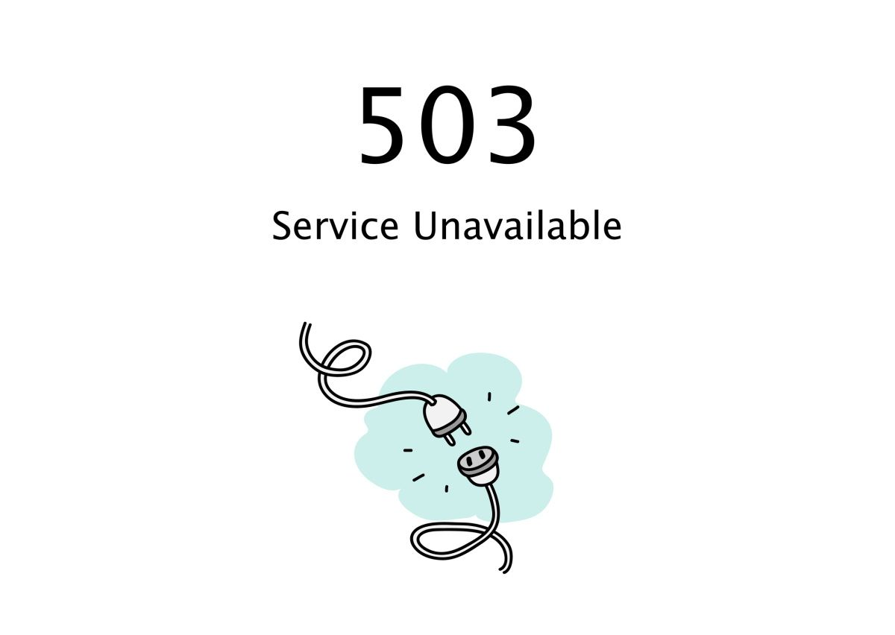

Cloudflare est un réseau de distribution de contenu sécurisé ( CDN ) qui utilise des serveurs proxy et une architecture informatique de pointe pour diffuser du contenu en toute sécurité et rapidement depuis le cloud.
Il dispose d'un réseau de serveurs dans le monde entier pour aider ses clients à améliorer les mesures de performance et à fournir du contenu le plus rapidement possible.
Cloudflare a été lancé par Matthew Prince et Lee Holloway en 2004 pour lutter contre le spam. En juin 2010, la société a signalé que la version bêta de la couche de mise en cache de Cloudflare permettait aux sites de se charger environ 30 % plus rapidement.
Classé parmi les leaders de la prévention des attaques DDoS en 2019. Le CDN compte de nombreux clients de premier plan, notamment IBM, Zendesk, Reuters, Udacity, la Bibliothèque du Congrès, Discord, Marketo et Digital Ocean. Cloudflare est soutenu par QUALCOMM, Microsoft, Baidu et Google.
Ce mardi 21 juin, Cloudflare a subi une panne qui a affecté le trafic dans 19 de ses datacenters. la panne est a l'origine d'une modification effectuée dans le cadre d'un projet visant à accroitre a la resistance dans les points d'implantation. En effet ces derniers mois cloudflare ces efforcé de convertir l'ensemble de ces points d'implantations a profit d'une architecture plus redondante. Sur cette periode ils ont migrés tous leurs 19 datacenters sur cette architecture qu'ils ont nommés Multi-Colo PoP (MPC). les 19 datacenters concernés sont les suivant: Amsterdam, Atlanta, Ashburn, Chicago, Frankfurt, Londres, Los Angeles, Madrid, Manchester, Miami, Milan, Mumbai, Newark, Osaka, São Paulo, San Jose, Singapour, Sydney et Tokyo. Cette nouvelle architecture nous a offert des améliorations significatives en matière de fiabilité, tout en nous permettant de procéder à la maintenance de ces points d'implantation sans perturber le trafic des clients. Comme ces points soutiennent également une vaste proportion du trafic Cloudflare, tout problème survenant dans l'un d'eux peut avoir une incidence particulièrement étendue et c'est ce qui s'est produit ce mardi. Afin d'être joignables sur Internet, les réseaux tels que celui de Cloudflare font appel à un protocole nommé BGP. Dans le cadre de ce protocole, les opérateurs définissent des politiques qui permettent de décider quels préfixes (un ensemble d'adresses IP adjacentes) sont annoncés aux pairs (les autres réseaux auxquels le réseau de l'opérateur se connecte) ou acceptés de la part de ces derniers. Ces politiques présentent des composants individuels, évalués de manière séquentielle. Le résultat final aboutira soit à l'annonce d'un préfixe donné soit à l'absence d'annonce de ce dernier. Une modification de la politique peut entraîner l'absence d'annonce d'un préfixe précédemment annoncé, auquel cas ce dernier est retiré de la table de routage et les adresses IP qui en dépendent ne seront plus joignables sur Internet. En déployant une modification de nos politiques d'annonce des préfixes, une réorganisation des termes nous a conduits à retirer un sous-ensemble de préfixes essentiel. Du fait de ce retrait, les techniciens de Cloudflare ont rencontré des difficultés supplémentaires pour joindre les emplacements concernés afin d'annuler la modification problématique. Nous disposons de procédures de secours conçues pour traiter de tels événements et y avons eu recours pour prendre le contrôle des points d'implantation affectés. le déploiement a atteint nos points d'implantation les plus fréquentés et disposant de la nouvelle architecture. La modification est déployée vers les troncs. C'est à ce moment que l'incident a débuté, car la modification a rapidement mis hors ligne ces 19 points d'implantation.
Cet incident a eu des répercussions très étendues. En outre, nous prenons la disponibilité très au sérieux. Nous avons identifié plusieurs domaines d'amélioration et continuerons à nous efforcer de dénicher d'éventuelles autres lacunes susceptibles d'entraîner une récidive.
Dans l'immédiat, nous travaillons sur ce qui suit :
Processus : le programme MCP a été conçu pour améliorer la disponibilité, mais une faille procédurale dans la manière dont nous avons mis à jour ces datacenters a finalement eu des répercussions plus larges, notamment dans ces points d'implantation MCP. Nous avons suivi une procédure échelonnée pour le déploiement de la modification, mais le processus n'incluait pas de datacenter MCP avant la dernière étape. Les politiques de modification et d'automatisation de ces dernières doivent inclure des procédures de test et déploiement spécifiques à l'architecture MCP afin de garantir l'absence de conséquences inattendues.
Architecture : la configuration incorrecte du routeur a bloqué l'annonce des routes appropriées à notre périphérie. Cette erreur empêchait donc le trafic de circuler correctement vers notre infrastructure. En définitive, la déclaration de politique (policy-statement) à l'origine de l'annonce de routage incorrecte sera remaniée afin d'empêcher une réorganisation incorrecte et non intentionnelle.
Automatisation : au niveau de notre suite d'automatisation, nous avons identifié plusieurs opportunités susceptibles d'atténuer tout ou partie des répercussions observées des suites de cet événement. Nous nous concentrerons en premier lieu sur deux types d'améliorations du processus d'automatisation, l'une conçue pour appliquer une politique d'échelonnement améliorée aux déploiements concernant la configuration réseau et l'autre pour assurer un plan de retour en arrière automatisé de type « commit-confirm » (soumission-confirmation). La première de ces améliorations (la politique d'échelonnement améliorée) aurait réduit de manière considérable les répercussions générales et la seconde (le plan de retour en arrière, ou rollback) aurait permis de réduire fortement le Time-to-Resolve (temps de résolution) pendant l'incident.